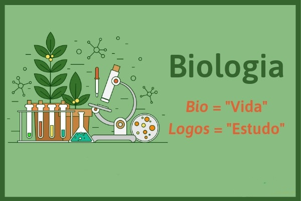
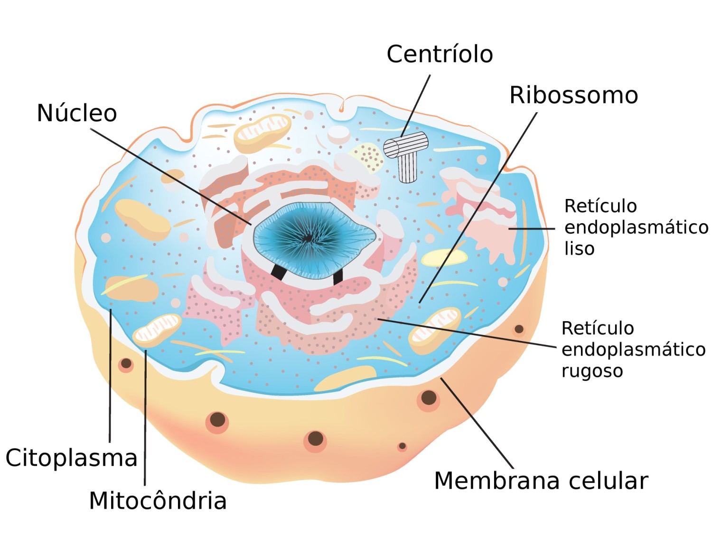
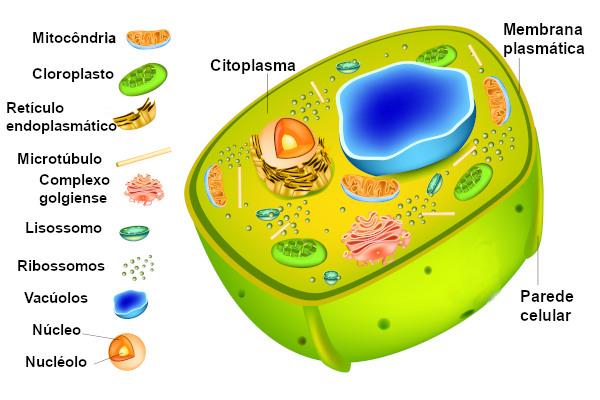
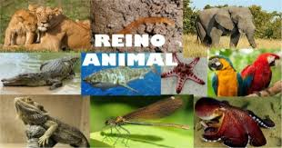
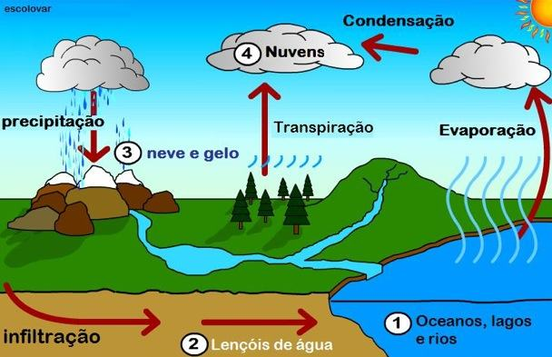

<html>
    <head>
        <meta charset="UTF-8">
        <title></title>
    </head>
</html>
<body witdh="1200"  >
    <table align="center"  >
        <tr>
            <td width="300" height="150"   >
              <h2>Menu</h2> 
             <ul type="disc">
                <li><font size="5" >Cécula Procarionte</font></li>
                <li><font size="5" >Célula Eucarionte</font></li>
                <li><font size="5" >Denge, Zika</font></li>
                <li><font size="5" >Citoplasma</font></li>  
                <li><font size="5" >Reino animal</font></li>  
                <li><font size="5" >Biocombutiveis</font></li>  
                <li><font size="5" >Biogeoquímica</font></li>  
              
            </ul>
            </td> 

            <td width="600" height="150"  colspan="3" >
                <p align="center"> <font size="6" ><i>Estudo de Biologia para o Enem</i></font>  </p>
            </td>          
            <td width="300" height="200"  >
                
            </td>
        </tr>
        
        <tr>
            <td height="150" > 
                
            </td>
                
            <td height="150"  width="300"  valign="top" > 
                <h2> 
                   <p align="center" >  </font size="1" > Célula Procarionte </font></p>
                </h2>

                    <p align="center" > <font size="5" > Procarionte é um organismo unicelular(única célular), sem núcleo diferenciado,
                      isso é está limitado por uma membrana, ficando imerso em meio ao citoplasma 
                    </font></p>
            </td>

            <td height="150"  width="300" >
                
            </td>

            <td height="150"  width="300" valign="top" >
                <h2> 
                    <p align="center" > </font size="1" > Célula Eucarionte</p><font>
                </h2>

                <p align="center" > <font size="5" > Eucarionte é um ser inicelular ou pluricelular que 
                    possui carioteca (Menbrana nuclear), ou seja, o seu núcleo é separado do citoplasma por uma membrana 
                </font></p>
            </td>
            <td height="150"  width="300" >
                <center>
                    
                 </center>
            </td>
        </tr>

        <tr>
            <td height="150" colspan="2" valign="top"  width="600" >
                 <h2><p align="center" > </font  > Dengue, Zika e Chikungunya</p><font></h2>

                     <p align="center" > <font size="5" >A Dengue, Zika e Chikungunya são doenças virais e são transmitidas
                        pelo mosquito Aedes aegypti, porém apenas as fêmeas são capazes de transmitir essa doenças para outros seres. 
                     </font></p> 

            </td>

            <td height="200" width="300" colspan="2"  >
                <center>
                    
                </center>
            </td>

            <td height="150" width="200"  >
                <p align="center" > <font size="5"> Todas essas doenças possuem sintomas semelhantes. 
            </td>
        </tr>

        <tr>
            <td height="150" width="200" rowspan="2" valign="top" >
                
            </td>

            <td height="150" width="200" valign="top"  > 
                <h2><p align="center" > </font  >Citoplasma</p><font></h2>
                 <p align="center"> <font size="5" >Ele é responsável por armazenar  substâncias químicas fundamentais 
                      para a manutenção da vida.
                </p>   
             </td>

            <td height="150" width="200" >
                <center>
                   <!--  -->
                </center>
            </td>

            <td height="150" width="200"  >
                
            </td>

            <td height="150" width="200" rowspan="2" >
                <h2><p align="center" > </font  >O reino animal é dividido em diversos filos.</p><font></h2>
                </font> </p>   

                    <ul type="disc">
                        <li><font size="5" >Poríferos</font></li>
                        <li><font size="5" >Cnidários</font></li>
                        <li><font size="5" >Platelmintos</font></li>
                        <li><font size="5" >Nematódeos</font></li>  
                        <li><font size="5" >Nematelmintos</font></li>  
                        <li><font size="5" >Anelídeos</font></li>  
                        <li><font size="5" >Equinodermos</font></li>  
                        <li><font size="5" >Moluscos</font></li>  
                        <li><font size="5" >Artrópodes</font></li>  
                        <li><font size="5" >Cordados</font></li>  
                    </ul>
            </td>
        </tr>

        <tr>
            <td height="150"  width="200" >
                
            </td>

            <td height="150"  width="200">
                <p align="center"> <font size="5" >
                    17 a 19 Questões de Biologia; Não vai fazer o Enem sem saber o que é: Carboidratos, Citologia Básica, Dna e Rna, Ciclos Biogeoquímicos, Biocombustíveis
                </font> </p> 
            </td>

            <td height="150" width="200" >
                <p align="center"> <font size="5" >
                    Os animais são organismos multicelulares, eucariontes e que apresentam nutrição heterotrófica,
                     ou seja, não são capazes de produzir seu próprio alimento.
                </font> </p> 
            </td>

        </tr>

        <tr>
            <td height="150" width="200" colspan="2" >
                <h2> 
                    <p align="center" > </font size="1" >Biocombustíveis</p><font>
                </h2>
                <p align="center"> <font size="5" >
                    Biocombustíveis são derivados de biomassa renovável que podem substituir, parcial ou totalmente,
                     combustíveis derivados de petróleo e gás natural em motores a combustão ou em outro tipo de geração
                      de energia.
                </font> </p> 
            </td>

            <td height="150" width="350" >
                   
            </td>
            
            <td height="150" width="200" colspan="2" >
                <h2> 
                    <p align="center" > </font size="1" >Biogeoquímica</p><font>
                </h2>
                <p align="center"> <font size="5" >
                    Biogeoquímica é a parte da geoquímica que estuda a influência dos seres
                     vivos sobre a composição química da Terra.
                </font> </p> 
            </td>
        </tr>
    </table>
</body>